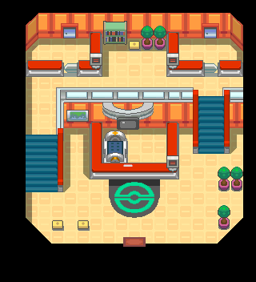

049 如期未至的朋友
一句话目标：帮满金市精灵中心的露营少女找到她迟迟未到的朋友。
接取地点
- 满金市精灵中心（地图 50:3），露营少女（local_id 12）在 (11,4)。
- 朋友所在的另一处精灵中心（地图 56:15），露营少年（local_id 2）在 (5,16)。
- 当前目录描述：帮助满金市精灵中心的露营少女找到她的朋友。
- 旧表说明（同一旗标）：我和我的朋友约好了在精灵中心见面，可是他迟迟没有到，他会不会是迷路了？
准备条件
- 需先看过“支援请求”（接取分支
0x08AEC4A3／0x08AEC071检查旗标 4246，来源未在包内定位）。
操作步骤
- 到满金市精灵中心 (50:3) (11,4) 找露营少女，她念叨“明明说好在精灵中心见面的……他究竟到哪里去了？”，并向你求助“我和我的朋友约好了在精灵中心见面，可是他迟迟没有到……你能帮我找找他吗？”。
- 答应后出现「接受任务:<如期未至的朋友>」（接取旗标 5976），她说“他和我一样，也是一身露营少年的装扮”。
- 到另一处精灵中心 (56:15) (5,16) 找到露营少年，告诉他有人在等；他恍然“难不成是刚刚路过的……噢噢，我知道了！谢谢你！”，随后离开（置旗标 5977）。
- 回满金市精灵中心 (50:3) 向少女复命，她说“谢谢你！原来他是跑到另外一个精灵中心去了呢……这是给你的报酬！”，随后与少年一起离开。
交付检查
- 向少女复命后由脚本
0x08AEC723给报酬并置完成旗标 5978（脚本内提示文字复用为“接受任务:<如期未至的朋友>”）。
奖励
- TM77 0402 ×1
- 4000$
- 3 BracerPoints
容易卡住的位置
- 少年在“另一处精灵中心”，不在少女所在的精灵中心；两处分别是 50:3 与 56:15。
- 复命时脚本
removeobject12／22 使少女与少年离场，少女的显示另有旗标 5979 控制。 - 若只答应而未找到少年，再找少女只会重复“那拜托你了！”。
来源与待补字段
- 来源包：data/quest_packets/049.json；接取脚本
0x08F56A68、0x08AEC071、0x08AEC4A3、0x08F56B3D、0x08AEC6E5，少年0x08AECA4C、0x08AECA5F，复命结算0x08AEC723，人物控制0x08ED5CA2。 - 待补：旗标 4246（支援请求）的来源未在包内定位；相关物品：TM77。
地点地图
共享RGB底图；点击可缩放定位。数字对应本页相关地点，不代表地图上全部事件。
满金市


1 如期未至的朋友（11,4）
满金市


1 如期未至的朋友（5,16）